용접기사 (2008-03-02 기출문제)
1과목: 기계제작법
1. 다음 중 높은 용융점의 금속에 가장 부적당한 주조 방법은?
- 인베스트먼트 주조법
- 사형 주조법
- 다이캐스팅법
- 원심 주조법
(정답률: 알수없음)

2. 지름 20mm의 드릴을 이용하여 26m/min의 절삭속도와 0.1 mm/rev의 이송으로 깊이 100 mm인 구멍을 뚫는데 소요되는 시간은 얼마인가? (단, 드릴의 원추 높이는 5.4 mm이다.)
- 2분 33초
- 3분 55초
- 4분 34초
- 5분 55초
(정답률: 42%)
3. 다음 중 구멍의 내면을 가장 정밀하게 가공하는 방법은?
- 드릴링
- 소잉
- 펀칭
- 호닝
(정답률: 알수없음)
4. 다음 중 각도측정에 사용되는 측정기는?
- 포인트 마이크로미터
- 수준기(level)
- 텔리스코핑 게이지
- 조도계(roughness indicator)
(정답률: 84%)
5. 순철의 자기(磁氣)변태점은?
- A1 변태점
- A2 변태점
- A3 변태점
- A4 변태점
(정답률: 84%)
6. 다음은 가공변질층에 관한 설명이다. 틀린 것은?
- 가공변질층은 절삭저항의 크기에는 관계가 없다.
- 가공변질층은 내식성과 내마모성이 좋지 않다.
- 가공변질층은 흔히 잔류응력이 남는다.
- 절삭온도는 가공변질층에 영향을 미친다.
(정답률: 92%)
7. 프레스 작업(press working) 가공방식이 아닌 것은?
- 래핑(lapping)
- 벤딩(bending)
- 드로잉(drawing)
- 엠보싱(embossing)
(정답률: 54%)
8. 선반의 전 소비동력(N)은 다음 중 3가지 동력을 합한 것이다. 이 3가지에 해당하지 않는 것은?
- 손실동력(N)
- 유효절삭동력(N)
- 이송동력(N)
- 회전동력(N)
(정답률: 59%)
9. 다음 중 이음매 없는 강관을 제조하는 방법은?
- 인발 가공
- 전조 가공
- 만네스만 법
- 냉간 압연법
(정답률: 73%)
10. 두께가 2mm인 연강판에 펀칭 프레스로 지름 20mm의 구멍을 뚫을 때 필요한 힘은 약 얼마인가? (단, 전단응력은 20kgf/mm2 이다.)
- 2164 kgf
- 2514 kgf
- 3620 kgf
- 5068 kgf
(정답률: 70%)
11. 구성인선(built-up edge)을 감소시키기 위한 방법으로 틀린 것은?
- 절삭공구의 인선을 예리하게 한다.
- 윤활성이 좋은 절삭유를 사용한다.
- 공구 윗면 경사각을 크게 한다.
- 저속으로 절삭 작업을 한다.
(정답률: 100%)
12. 가공의 영향으로 생긴 스트레인이나 내부 응력을 제거하고 미세한 표준조직으로 기계적 성질을 향상시키는 열처리법은?
- 소프트닝
- 보로나이징
- 하드 메이싱
- 노멀라이징
(정답률: 100%)
13. 강판재에 곡선 윤곽의 구멍을 뚫어서 형판(template)을 제작할 때 다음 중 가장 적합한 가공법은?
- 버니싱 가공
- 와이어 컷 방전가공
- 초음파 가공
- 플라즈마 젯 가공
(정답률: 50%)
14. 다음의 프레스가공 방식 중 굽힘가공에 해당하는 것은?
- 펀칭(punching)
- 트리밍(trimming)
- 컬링(curling)
- 셰이빙(shaving)
(정답률: 89%)
15. 주물사에 가장 많이 포함된 주성분은?
- MgO
- Fe2O3
- Aℓ2O3
- Sio2
(정답률: 91%)
16. 가는 선(細線)의 접합이나 특수한 이중 금속 간의 접합에 극히 유용하며, 발진기, 진동자, 지동전달기구, 용접팀, 가압기 및 자동제어장치 등을 이용하는 용접법은?
- 스터드 용접법(stud welding)
- 마찰 용접법(friction welding)
- 냉간 용접법(cold pressure welding)
- 초음파 용접법(ultrasonic welding)
(정답률: 94%)
17. 소성가공에 속하지 않는것은?
- 암연가공
- 인발가공
- 단조가공
- 선반가공
(정답률: 64%)
18. 18-4-1계 고속도강에서의 18의 의미는?
- 탄소의 함유량
- 텅스텐의 함유량
- 크롬의 함유량
- 몰리브덴의 함유량
(정답률: 74%)
19. 용접에서 가스 가우징(gas gousing) 이란?
- 열원을 가스화염에서 얻는 일종의 맞대기 용접이다.
- 용접 부분의 뒷면을 따내거나 강재의 표면에 둥근 홈을 파내는 가스가공이다.
- 모재의 홈을 파고 가스건으로 모재와 용접봉을 가열하여 눌러 줕이는 작업이다.
- 가스절단시 절단성으로 판정하는 기준이다.
(정답률: 92%)
20. 게이지블록의 특징으로 틀린 것은?
- 측정면이 서로 밀착하는 특성을 가지고 있어서 몇 개의 수로 많은 치수의 기준을 얻을 수 있다.
- 표시하는 길이의 정도가 아주 높다.
- 정밀도가 높아 사용하는데 높은 숙련도가 필요하다.
- 광파장으로부터 길이를 측정할 수 있다.
(정답률: 93%)
2과목: 재료역학
21. 한 변의 길이가 4cm인 정사각형 단면의 봉이 압축하중을 받고 있다. 이 때의 수직 변형률이 0.004라면 단면적의 증가량은 얼마인가? (단, 이 재료의 포아송 비는 0.25 이다.)
- 0.015cm2
- 0.022cm2
- 0.032cm2
- 0.512cm2
(정답률: 25%)
22. 지름 d의 원형 단면을 가진 보의 전단력을 V라 할때 단면의 중립축에서 일어나는 최대 전단 응력을?
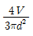
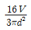
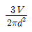
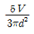
(정답률: 91%)
23. 그림과 같은 부정정보가 단순 지지단에서 모멘트 Mo를 받는다. 단순 지지단에서의 반력 R8는?
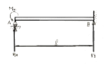
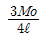
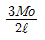
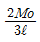
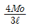
(정답률: 58%)
24. 단면의 도심 o를 지나는 단면 2차 모멘트 Ix는?
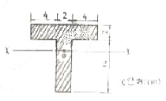
- 1210mm2
- 120.9mm2
- 1210cm2
- 120.9cm2
(정답률: 55%)
25. 그림에서 인장력 12kN이 작용할 때 지름 20mm인 리벳단면에 일어나는 전단 응력은 몇 MPa 인가?
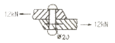
- 68.2
- 38.2
- 23.8
- 32.0
(정답률: 79%)
26. 그림과 같은 평면 응력 상태에서 σ
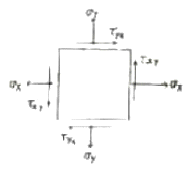
- σmax =24.6, σmin = -11.6
- σmax =21.8, σmin = -9.8
- σmax =19.4, σmin = -8.2
- σmax =17.8, σmin = -7.2
(정답률: 46%)
27. 다음 보에서 최대 굽힘모멘트가 일어나는 곳은 좌단에서 어느 위치인가?
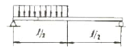
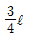
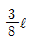
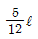
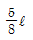
(정답률: 알수없음)
28. 지름 3cm인 축이 1590 rpm으로 회전하고 있다. 이 축에 발생하는 최대 전단응력이 30 MPa을 넘지 않는 범위에서 이 축이 전달할 수 있는 최대 동력은 몇 kW인가?
- 26
- 11
- 35
- 17
(정답률: 알수없음)
29. 다음 그림과 같이 균일분포 하중 ω를 받는 보에서 굽힘 모멘트 선도는?
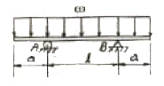
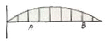
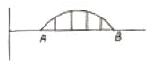
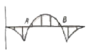
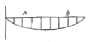
(정답률: 91%)
30. 다음 그림과 같은 구조물에 힘 P가 작용할 때, A점에서의 모멘트는?
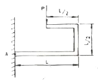
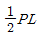
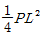
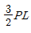
- 2PL
(정답률: 64%)
31. 그림과 같이 수평 강체봉 AB의 일단을 연직벽에 힌지로 연결하고 죄임봉 CD로 매단 구조물이 있다. 죄임봉의 단면적은 1cm2 , 허용 인장응력은 100 MPa, 탄성계수가 200 GPa 일 때 B단의 최대 안전하중은 몇 kN 인가?
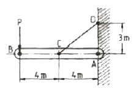
- 3
- 3.75
- 6
- 8.33
(정답률: 알수없음)
32. 지름 70mm인 환 봉에 20 MPa의 최대 전단응력이 생겼을 때의 비틀림 모멘트는 몇 N · m 인가?
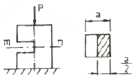
- 1347
- 2546
- 3467
- 4500
(정답률: 19%)
33. 정사각형 단면의 짧은 기둥에 그림과 같이 측면에 홈이 파져 있다. 도심에 작용하는 하중 P로 인하여 단면 m-n에 발생하는 최대 압축응력은 홈이 없을 때 압축응력의 몇 배인가?
- 2
- 4
- 6
- 8
(정답률: 70%)
34. 다음 그림과 같은 균일 단면의 보 AC가 C점에서 하중 P를 받고 있을 때, C점에서의 처짐을 길이 L과 굽힘 강성 EI의 항으로 구한 것을?
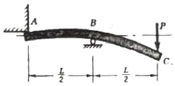
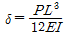
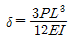
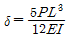
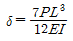
(정답률: 55%)
35. 단면적이 10cm2인 봉을 30℃에서 수직으로 매달고 10℃로 냉각하였을 때 원래의 길이를 유지하려면 봉의 하단에 몇 kN의 하중을 가하면 되는가? (단, 탄성계수E = 200 GPa, 열팽창계수 α=1.2×10-5/℃, 자중에 의한 산장량은 무시한다.)
- 35
- 17
- 26
- 48
(정답률: 알수없음)
36. 그림과 같은 단주에서 편심거리 e에 압축하중 P=80kN이 작용할 때 단면에 인장력이 생기지 않기 위한 e의 한계는 몇 cm 인가?
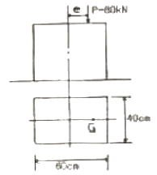
- 8
- 10
- 12
- 14
(정답률: 58%)
37. 길이가 L이고 탄성계수가 E인 봉에 인장하중 P가 작용하여 하중이 작용한 방향으로 변형량 λ가 발생되었다면 이 때 이 봉의 단면적은 어떻게 표현되겠는가?
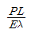
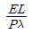
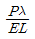
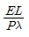
(정답률: 55%)
38. 스트레인 게이지를 이용하여 물체 표면(x - y평면)상의한 점에서 측정한 변형률 성분들이 ɛx =150×10-4 ,ɛy=-200×10-6, rxy=-100×10-6이다. 이 점에서의 수직응력 σx는 몇 MPa 인가? (단, 탄성계수 및 포아송비는 E=200 GPa, μ=0.3이다.)
- 8.7
- 12.7
- 19.8
- 25.3
(정답률: 50%)
39. 선형 탄성재료의 전단 탄성게수가 G이고 탄성계수가 E라 한다면 이 μ재료의 포아송비는 어떻게 표현되겠는가?
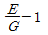
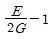
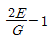
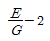
(정답률: 77%)
40. 직육면체가 일반적인 3축응력 σx, σy, σz를 받고 있을 때 체적 변형률 ɛy는 대략 어떻게 ɛy표현되는가?
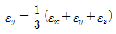
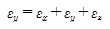
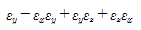
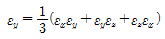
(정답률: 58%)
3과목: 용접야금
41. 4.3%C 의 공정성분인 액체가 1130℃에서 응고하여 생기는 철-탄화철계의 공정조직으로 세링의 오스테나이트와 시멘타이트가 혼합된 조직은?
- 펄라이트(pearlite)
- 트루스타이트(troostite)
- 레데부라이트(ledeburite)
- 페라이트(ferrite)
(정답률: 62%)
42. 용접 형상 불량 중 온점(fish eye)의 주요 원인이 되는 원소는?
- 산소
- 질소
- 수소
- 탄산가스
(정답률: 82%)
43. 다음 중 산소 ·아세틸렌 가스절단이 가장 잘 되는 금속은?
- 주철
- 스테인리스강
- 비철금속
- 탄소강
(정답률: 62%)
44. 오스테나이트계 스테인리스강의 용접시 강이 냉각되면서 고온균열을 발생시키는 주요 원인으로 틀린 것은?
- 아크길이가 너무 길때
- 구속력이 가해진 상태에서 용접할 때
- 크레이터 처리를 했을 때
- 모재가 오염되어 있을 때
(정답률: 75%)
45. Mn이 탄소강에 미치는 영향이 아닌 것은?
- 탈산, 탈황 촉진
- 강도 및 인성 증가
- 주조성 개선
- 담금질 효과 저해
(정답률: 65%)
46. 어느 방향으로 소성변형을 준 금속재료에 역뱡향으로 소성 변형을 가하면 항복점이 낮게 되는데 이 현상을 무엇이라고 하는가?
- 코트렐 효과(Cottrell effect)
- 바우싱거 효과(Bauschinger effect)
- 버거스 효과(Burgers effect)
- 스즈키 효과(Suzuki effect)
(정답률: 93%)
47. 퍼커션 용접(percussion welding)은 다음 중 어느 것에 해당하는가?
- 아크 용접
- 가스 용접
- 전기 저항 용접
- 전자 빔 용접
(정답률: 100%)
48. 산소-아세틸렌 가스용접에서 구리, 황동 등을 용접할 때 주로 사용하는 용접 불꽃은?
- 중성 불꽃
- 탄화 불꽃
- 산화 불꽃
- 약한 탄화 불꽃
(정답률: 67%)
49. 피복 아크용접에서 용접전류가 260A, 용접 전압이 40V, 용접 속도가 10 cm/min 일 때 용접 임열(J/cm)은?
- 62400
- 10400
- 6500
- 153800
(정답률: 알수없음)
50. 주조시 주형에 금형 또는 칠 메탈을 붙여 필요한 부분안을 급랭시켜 경도를 증가시킨 내마모성 주철은?
- 칠드주철
- 가단주철
- 구상흑연주철
- 흑심가단주철
(정답률: 79%)
51. 금속의 자기변태에 대한 설명으로 올바fms 것은?
- 철의 자기변태점은 358℃, 니켈은 768℃, 코발트는 1120℃이다.
- 일정한 온도에서 자기의 강도가 감소되는 변태이다.
- 자기변태는 원자의 배열 및 격자의 배열 변화만 일어난다.
- 일정온도 이상에서 결정구조는 변화하지만 자성은 잃지 않고 강자성체로 유지된다.
(정답률: 50%)
52. 구리 및 구리 합금의 용접성에 대한 설명으로 틀린 것은?
- 용접성에 영향을 주는 것은 열전도도, 열팽창계수, 용융 온도, 재결정 온도 등이다.
- 구리합금의 경우 과열에 의한 아연 증발로 용접사가 중독을 일으키기 쉽다.
- 구리의 열팽창 계수는 연강보다 200% 이상 크기 때문에 용접 후 응고 수축시 변형이 생기지 않는다.
- 가스 용접시 수소 분위기에서 가열을 하면 산화물이 환원되어 수분을 생성시킨다.
(정답률: 85%)
53. S-N 곡선에 대한 설명으로 옳은 것은?
- 피로시험에서 반복응력과 반복회수를 나타내는 곡선
- 탄소함유량을 도시한 곡선
- 인장시험에서 인장력과 연신율을 나타내는 곡선
- 항온변태 속도를 나타내는 곡선
(정답률: 78%)
54. 저탄소강을 0~500℃ 사이에서 인장시험하면 200~300℃의 온도 범위에서 인장 강도가 매우 크게 되고 연성이 매우 작아져 취성을 나타낸다. 이것을 무엇이라 하는가?
- 연성취성
- 청열취성
- 풀림취성
- 적열취성
(정답률: 83%)
55. 다음 중 금속결정의 격자구조가 아닌 것은?
- 체심입방격자
- 면심임방격자
- 세밀이방걱자
- 조일육방격자
(정답률: 77%)
56. 용접구조물의 제작시 예열의 목적을 잘못 설명한 것은?
- 용접구조물의 잔류 응력을 경감시킨다.
- 용접시 발생하는 변형을 경감시킨다.
- 임계온도를 통과, 냉각될 때 냉각속도를 빠르게 한다.
- 용접구조물의 비드 밑 균열을 방지시킨다.
(정답률: 100%)
57. 황이 층상으로 존재하는 강을 서브어지드 아크 용접할 때 발생하는 균열로서 저수소계 용접봉 등의 사용으로 방지가 가능한 것은?
- 헤어 균열
- 설퍼 균열
- 비드 밑 균열
- 크레이터 균열
(정답률: 84%)
58. 금속의 열간가공과 냉간가공을 구분하는 기준점은?
- 자기변태온도
- 뜨임온도
- 재결정온도
- 풀림온도
(정답률: 86%)
59. 연강용 피복금속 아크 용접봉의 종류 표기로 옳은 것은?
- E4301 - 라임티타니아계
- E4303 - 일미나이트계
- E4311 - 고산화티탄계
- E4316 - 저수소계
(정답률: 90%)
60. 다음 중 KS규격에 의한 용접 구조용 압연 강재는?
- SKH4
- STC6
- SM400B
- SPS10
(정답률: 알수없음)
4과목: 용접구조설계
61. 판두께 10mm 의 아래보기 맞대기 용접 20cm와 판두께 22mm 수평 맞대기 용접 10cm가 있다. 이 때 환산용접길이는 얼마인가? (단, 모두가 현장용접으로 할 경우이며 판두께 10mm 아래 보기 맞대기 용접에서의 환산계수는 1.92 이고, 판두께 22mm 수평 맞대기 용접은 6.12 이다.)
- 0.996m
- 9.96m
- 99.6m
- 996m
(정답률: 알수없음)
62. 용접 후의 잔류응력 완화법이 아닌 것은?
- 스카핑법
- 기계적 응력완화법
- 피닝법
- 저온 응력완화법
(정답률: 75%)
63. 맞대기 완전용입 이음에서 굽힘모멘트가 9800kgf·cm일 때 최대굽힘 응력은 약 몇 kgf/cm2 정도인가? (단, 용접선의 길이 200mm, 두께 25mm이다.)
- 470
- 47.0
- 4.70
- 0.47
(정답률: 알수없음)
64. 인장시험편 A2호 표정거리는 몇 mm인가?
- 60mm
- 50mm
- 24mm
- 12mm
(정답률: 75%)
65. 필릿 용접 이음부의 루트부분에 생기는 저온균열로 모재의 열팽창 및 수축에 의한 비틀림이 주원인인 균열은?
- 힐 균열
- 루트 균열
- 토 균열
- 비드 밑 균열
(정답률: 알수없음)
66. 그림과 같은 용접이음에서 ℓ=150mm, h=20mm, L=60mm 굽힘응력 350N/cm2라 할 때 견딜 수 있는 하중은?
- 5.83N/mm2
- 58.3N/mm2
- 583.3N/mm2
- 5833n/mm2
(정답률: 62%)
67. 용접균열시험에 속하지 않는 것은?
- 킨젤 시험
- 저온균열 시험
- 재열균열 시험
- 라멜라테어 시험
(정답률: 알수없음)
68. 초음파탐상법의 종류가 아닌 것은?
- 펄스 반사법
- 투과법
- 극간법
- 공진법
(정답률: 59%)
69. 용접 홈의 형상과 특징을 설명한 것 중 잘못된 것은?
- 형 홈은 가공을 간단하나 반복하중, 충격하중이 작용하는 상태에서는 사용이 곤란하다.
- V형 홈은 가공이 비교적 간단하나 용입이 다소 불완전 이음이 되어 모든 하중에 견디기 곤란하다.
- X형 홈은 피복 아크 용접에서 판두께 12mm 이상의 것에 사용하여 모든 하중에 견딜 수 있다.
- U형 혹은 피복 아크 용접에서 핀두께 16~50mm 정도에 사용하며 가장 용접하기 쉬운 형상이다.
(정답률: 31%)
70. 용접변형의 방지법 중 잔류응력이 가장 많이 남는 방법은?
- 용접열을 억제 할 것
- 용접 순서를 충분히 고려 할 것
- 구속 지그를 사용 할 것
- 예열 또는 후열을 사용 할 것
(정답률: 67%)
71. 용접이음에서 내식성에 영향을 미치는 인자가 아닌 것은?
- 이음형상
- 플릭스
- 잔류응력
- 판두께
(정답률: 50%)
72. 저온균열과 고온균열(hot crack) 의 설명으로 맞는 것은?
- 300℃ 이하에서 발생하는 균열은 저온 균열이다.
- 고온 균열은 용접금속이 응고 후 48시간 이내에 발생하는 균열이다.
- 고온 균열은 수축응력이나 열 변형에 의한 응력집중 등의 원인으로 인하여 발생하는 균열이다.
- 설퍼크랙(sulfur crack)은 저온균열이다.
(정답률: 72%)
73. 용접부 시험의 설명으로 맞는 것은?
- 침투검사는 용입불량의 열영향부의 범위, 결함의 분포 상황을 관찰하는 방법이다.
- 파면검사는 결정의 조밀, 균열, 기공, 선상조직, 은점 등을 관찰하는 방법이다.
- 굽힘시험은 표면 굽힘 시험과 이면굽힘 시험의 2종류만 있다.
- 충격시험은 용입, 각장의 차, 균열, 슬래그 혼입 등을 시험한다.
(정답률: 67%)
74. 디음은 엔드댐에 대한 설명이다. 이중 틀린 것은?
- 모재를 구속시키는데 사용 한다.
- 용접 시작에만 사용 한다.
- 용접 결함 방지에 사용 한다.
- 회전 변형을 방지하는데 사용 한다.
(정답률: 60%)
75. 용접부에 발생하는 기공의 원인이 아닌 것은?
- 용접봉 건조 불량
- 용접부의 급속한 응고
- 과대 전류의 사용
- 적정 용접속도 유지
(정답률: 100%)
76. 연강의 용접이음에서 정하중이 작용할 때 안전율로 가장 적합한 것은?
- 3
- 5
- 8
- 12
(정답률: 70%)
77. 두께가 얇은 박판 용접에서는 잔류응력은 적으나, ( )은 크게 된다. ( ）속에 적당한 말은?
- 용접 변형
- 인장 응력
- 압축 응력
- 구속력
(정답률: 84%)
78. 용접작업에서 용접봉의 용착효율을 나타내는 식은?
- 용착효율(%)=용착금속의중량/용접본의 사용중량
- 용척효율(%)=용접봉의사용중량/용착금속의 중량
- 용착효율(%)=용착금속의중량/용접봉의사용시간
- 용착효율(%)=용접봉의사용시간/용착금속의중량
(정답률: 77%)
79. 수직으로 9000N의 힘이 작용하는 부분에 수평으로 맞대기 용접을 하고자 하는데 용접부의 형상은 판두께 6mm, 용접선의 길이 250m로 하려고 할 때 이음부에 발생하는 인장응력은?
- 2 N/mm2
- 4 N/mm2
- 6 N/mm2
- 8 N/mm2
(정답률: 92%)
80. 용접 변형 방지법에서 냉각법에 속하지 않는 것은?
- 수냉동판 사용법
- 살수법
- 석면포 사용법
- 수냉 침수법
(정답률: 알수없음)
5과목: 용접일반 및 안전관리
81. 스카핑(scarfing) 작업과 가스 가우징(gasgousing) 작업을 비교하여 설명한 것이다. 맞는 것은?
- 스카핑은 자동으로만 되고 가스 가우징은 수동으로만 작업된다.
- 스카핑은 냉간재에만 사용된다.
- 가스가우징은 스카핑보다 작업능력이 크다.
- 스카핑은 가스가우징보다 넓게 표면을 깎는다.
(정답률: 78%)
82. 용접구조물이 리벳구조물에 비하여 단점이 아닌 것은?
- 수밀, 기밀이 우수하다.
- 품질관리가 나쁘다.
- 응력집중이 생기기 쉽다.
- 용접기술이 필요하다.
(정답률: 알수없음)
83. 아크용접 피복제의 역할이 아닌 것은?
- 용착금속에 필요한 합금원소를 첨가시킨다.
- 용착금속의 급냉을 촉진한다.
- 스패터 발생을 적게 한다.
- 슬래그 제거를 쉽게 한다.
(정답률: 90%)
84. 아크 용접에서 크레이터(crater)가 생기는 이유는?
- 용접전류를 세게 했을 때
- 아크를 중단시켰을 때
- 용접전압을 높게 했을 때
- 용접속도가 느릴 때
(정답률: 67%)
85. 아크 용접 피복제의 주요성분이 아닌 것은?
- 가스 발생성분
- 아크 안정성분
- 질화성분
- 슬래그 생성성분
(정답률: 82%)
86. 가스용접시 프로판 가스의 성질을 설명한 것으로 틀린 것은?
- 상온에서 액체 상태이다.
- 쉽게 기화하여 발열량이 높다.
- 온도 변화에 따른 팽창률이 크다.
- 액화하기 쉽고 용기에 넣어 수송이 편리하다.
(정답률: 70%)
87. 탄산가스 아크 용접의 특성 중 틀린 것은?
- 전류밀도가 높아 용입이 깊다.
- 용제를 사용하지 않아 슬래그 혼입이 없다.
- 옥외 작업성이 양호하다.
- 용착금속의 기계적 성질이 우수하다.
(정답률: 62%)
88. CO2가스 아크 용접의 자동용접기에서 제어장치(control box) 가 하는 일이 아닌 것은?
- 전원 송급
- 와이어 송급
- 보호가스 제어
- 냉각수 공급
(정답률: 30%)
89. 전자동 미그(MIG)용접에 관한 설명 중 옳은 것이 아닌 것은?
- 와이어의 공급, 토치의 이송 등이 자동적으로 이루어진다.
- 스패터나 기포가 생기지 않도록 될 수 있는 헌아크의 길이는 길게 하는 것이 좋다.
- 대부분 직류 역류성을 쓰며, 아크가 불안정하게 되지 않는 한 저전류를 쓴다.
- 전류밀도가 너무 크면 기포가 많게 될 경향이 있다.
(정답률: 72%)
90. 대형 파이프이 원주용접을 연속적으로 아래보기 자세로 용접하기 위해 모재의 외경을 지지하면서 회전시키는 자동용접 기구는?
- 터닝롤
- 플렌지 취부용 지그
- 포지셔너
- 회전지그
(정답률: 82%)
91. 가접시 주의하여야 할 사항으로 틀린 것은?
- 본 용접과 같은 온도에서 예열을 한다.
- 본 용접자와 동등한 기량을 갖는 용접자로 하여금 가접하게 한다.
- 용접봉은 본 용접 작업시에 사용하는 것과 같은 굵기의 것을 사용한다.
- 가접의 위치는 부품의 끝, 모서리, 각 등과 같이 단면이 급변하여 응력이 집중되는 곳은 가능한 피한다.
(정답률: 86%)
92. 직류용접에서 모재쪽에 양극(+)을 연결하고 용접봉에 음극(-)을 연결한 극성을 무엇이라고 하는가?
- 정극성
- 역극성
- 정류성
- 직류성
(정답률: 75%)
93. 다음 중 심(seam) 용접법에 해당하지 않는 것은?
- 맞대기(butt) 심 용접
- 프로젝션(projetction) 심 용접
- 포일(poil) 심 용접
- 매시(mash) 심 용접
(정답률: 84%)
94. 다음 중 용접 작업 안전에 적합하지 않은 사항은?
- 용접용 홀더는 B형보다는 A형 홀더를 사용하여야한다.
- 땀이나 물에 의해 습기찬 작업복, 장갑, 구두를 착용하지 않는다.
- 아크 용접기에는 전격방지기를 부착하여 사용한다.
- 주석, 아여 도금 강관을 용접할 경우에는 도금 피막이 벗겨지지 않도록 용접한다.
(정답률: 85%)
95. 피복아크 용접봉을 이용한 용접시 용적은 미세하며 용적수가 많은 이행 형태는?
- 미세 이행형
- 글로뷸러 이행형
- 단락 이해형
- 스프레이 이행형
(정답률: 77%)
96. 연강용 피복아크 용접의 심선재의 재료는?
- 고속도강
- 저합금강
- 저탄소강
- 고탄소강
(정답률: 80%)
97. 용접 작업 현장에서 주의할 점 중 틀린 것은?
- 폭발 위험지역 혹은 특수 인화성 물체 부근에서는 용접작업을 하지 말 것
- 화재발생 방지 조치를 충분히 하고 소화기를 준비할 것
- 탱크내 유해 가스로 인한 중독 작용이 발생되므로 통풍을 잘 하고 작업 할 것
- 복원중
(정답률: 40%)
98. 아크 용접시 발생하는 것 중 결막염이나 각막염을 일으키며 유해한 것은?
- α-선
- 높은 온도
- β-선
- 자외선과 적외선
(정답률: 93%)
99. 교류아크 용접기의 1차 전압이 220V, 정격 2차 전류가 200A, 정격 사용률 40%, 아크 전압 35V 일 때 용접전류 180A로 용접작업을 할 경우 허용 사용률은 몇 %인가?
- 69.4
- 48.6
- 28.6
- 49.4
(정답률: 37%)
100. 교류아크 용접에서 무부하 전압[V]은 어느 정도인가?
- 140
- 40
- 180
- 80
(정답률: 64%)